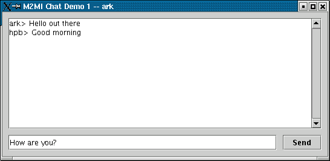

Package edu.rit.m2mi.chat1
provides a rudimentary M2MI-based Chat Demo application.
The Chat Demo is intended merely to demonstrate M2MI omnihandle invocations
and is not intended to be a full-featured chat application.
To run the Chat Demo application,
do the following steps on each participating machine:
-
Configure the M2MI Layer.
See package edu.rit.m2mi
and class M2MIProperties
for further information.
-
Configure the M2MP Layer
and run the M2MP Daemon in a separate process.
See package edu.rit.m2mp,
class M2MPProperties,
and class Daemon
for further information.
-
Run an instance of the Chat Demo application
by typing this command
in a separate process:
java edu.rit.m2mi.chat1.ChatDemo1 <name>
replacing <name> with the user name.
The application displays a chat window.

-
Type a line of text into any chat window on any machine
and hit return or click the "Send" button.
The line of text, prefixed by the user name,
shows up in all the chat windows on all the machines.
The ChatDemo1 program
displays a simple chat UI
(class ChatFrame),
and the program exports a chat object
(class ChatObject)
that implements interface Chat.
When the user sends a line of text in the UI,
the line is broadcast to all the chat objects
by calling putLine() on an omnihandle for interface Chat.
When each chat object receives a putLine() invocation,
it displays the line of text in the chat log in its UI.
In this way the line of text appears in all the chat programs
that are running out there.